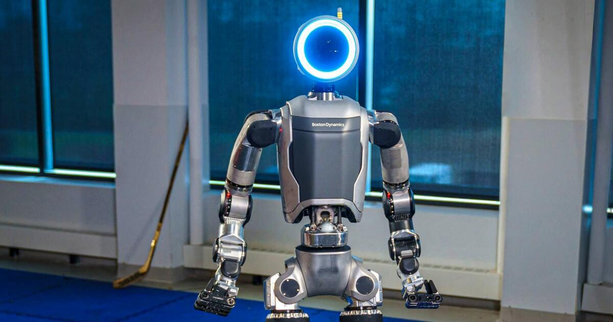

Before 1980
Engineering & Robotics Research
Raibert developed his academic foundation in engineering and robotics, leading to research into dynamic movement and legged robotic systems.
Founder of Boston Dynamics and a pioneer in dynamic robotics. Marc Raibert has helped advance the way robots balance, move, and interact with challenging real-world environments. His work has influenced the development of remarkable robots such as BigDog, Spot, and Atlas.
Marc Raibert is a roboticist known for his pioneering research into dynamic legged robots. In 1992, he founded Boston Dynamics after his work at MIT's Leg Laboratory. His research explored how robots can maintain balance, run, jump, and move through complex environments. This work helped shape a new generation of mobile robots, including BigDog, Spot, and Atlas. His career combines scientific research, engineering, and a vision for robots that can work in the real world.
Raibert developed his academic foundation in engineering and robotics, leading to research into dynamic movement and legged robotic systems.
He worked as an associate professor of computer science and was associated with the Robotics Institute, contributing to the development of robotics research.
At MIT, he served as a professor of electrical engineering and computer science and developed research into dynamic legged robots through the Leg Laboratory.
Raibert founded Boston Dynamics as a spin-off from MIT's Leg Laboratory, focusing on advanced mobile robots and dynamic movement.
BigDog demonstrated the potential of four-legged robots to maintain balance and travel across challenging outdoor terrain.
Boston Dynamics continued developing advanced robotic systems, including Atlas and Spot. Raibert later established the Robotics and AI Institute to advance research into intelligent machines.
MY PROJECTS
Here are some of the projects I've worked on. Each one helped me improve my skills and learn something new.

Atlas is an advanced humanoid robot developed by Boston Dynamics, designed to perform complex physical tasks using dynamic movement, balance, and intelligent control. It represents a major step forward in robotics and industrial automation.

Spot is a versatile four-legged robot designed to inspect industrial facilities, collect data, and navigate challenging environments. Its advanced sensors and autonomous capabilities help improve workplace safety.

BigDog is a four-legged robot developed by Boston Dynamics to travel across rough terrain while maintaining balance and stability. It helped advance research into dynamic locomotion and robotic mobility.